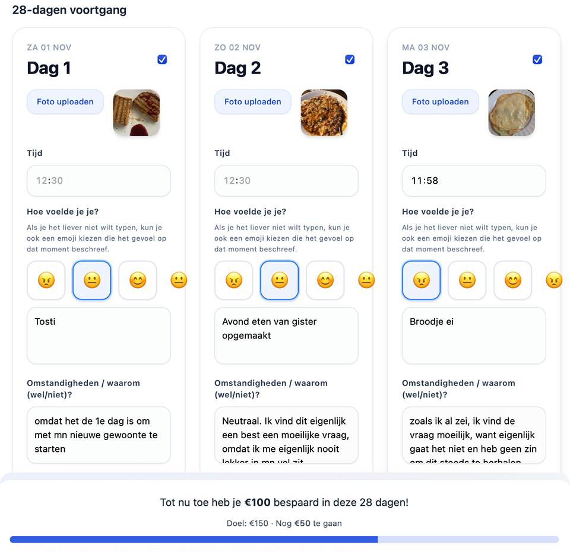

Korte beschrijving van de opdracht
Voor dit project moest ik een gewoonte veranderen door zelf te experimenteren en te ervaren. De opdracht bestond uit drie onderdelen:
- 1Verander je gewoonte: bedenk interventie(s)
- 2Monitor je proces
- 3Deel je insights

OUDE GEWOONTE
Bijna elke dag wraps kopen voor lunch
- Ik weet niet wat ik moet maken
- € 4 per dag
- Ik heb geen zin

NIEUWE GEWOONTE
Zelf lunch maken
- Doel: sparen voor een Uggs
- € 4 bersparen per dag
Aanpak
Klein beginnen werkt beter dan alles tegelijk. Start met:
- 2x per week
- Maak het makkelijk(simplifaction)
- Gebruik kleine duwtjes(nudging)

Waarom belangrijk voor mij?
€4 besparen per dag = €150 in 28 dagen → genoeg voor Uggs.
Plus: leren of ik gedrag kan veranderen met theorie uit Psych.

Bekijk hier welke competenties ik gebruik heb

Probleem geïdentificeerd: Ik kocht te vaak wraps (oude gewoonte)
Zelfonderzoek: Ik analyseerde waarom ik het eerder niet volhield
Theorie toegepast: Je onderzocht BJ Fogg's Tiny Habits methode en Psych concepten (nudging, simplification)
Job To Be Done bepaald: "Makkelijk, gezond en goedkoop lunchen zonder stress/tijd"
Om mensen te helpen met het besparen van geld, heb ik een app ontwikkelt waarin een draaiwiel met verschillende recepten aanwezig is. Via het draaien aan dit wiel kun je bepalen wat je die dag als lunch kan maken als je geen inspiratie hebt en om te voorkomen dat je geld uitgeeft aan het kopen van lunch. In de app staat onderin een voortgang bar voor extra motivatie en overzicht in de hoeveelheid geld die al bespaard is. Er is visuele feedback door de aanwezigheid van smlieys die de stemming/emotie aangeven.
Gamification: app met draaiwiel voor random recept
Simplification: 1 knop = random recept (geen keuzestress)
Tracking systeem voor voortgang
Visuele feedback (smileys)
